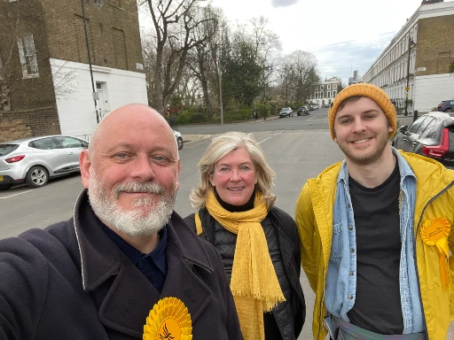
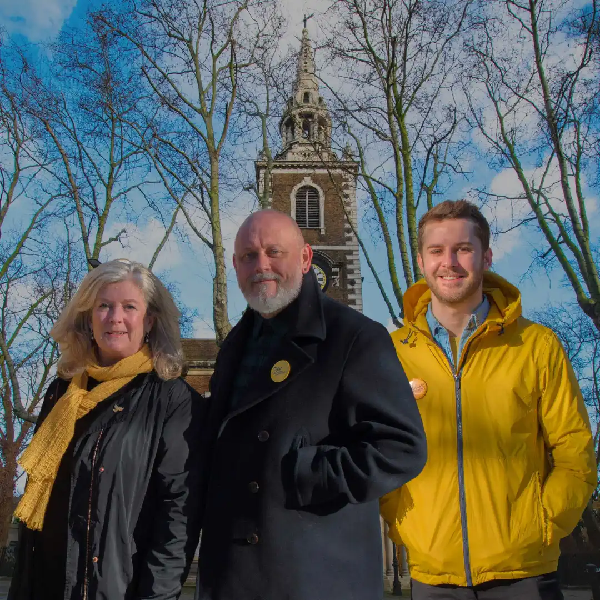
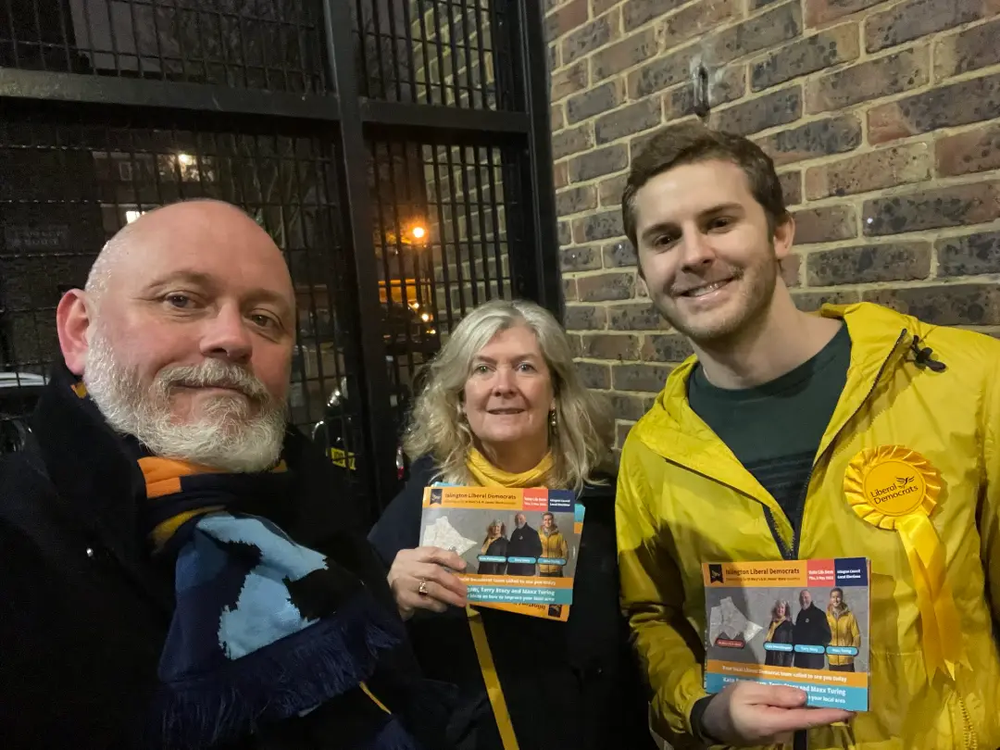

Maxx Turing
Community Activist
& Liberal Democrat
campaigner in
Islington
-
Call Maxx
+44 (0) 7482 315 084 -
Email Maxx
yes@votemaxx.com
Follow Maxx
🙌 🗳️ ✅
I'm Running in the 2022 Islington Local Elections

St Mary's & St James' candidates Terry Stacy, Kate Pothalingam and Maxx Turing.
I'm running for election in St Mary's & St James' Ward, Islington on Thu, 5 May 2022 alongside my fellow Liberal Democrat candidates Kate Pothalingam and Terry Stacy.
Read our 2022 election manifesto here. Please support our campaign! 🙏
Our 2022 election team is offering a positive alternative for Islington.
— Islington Liberal Democrats (@IslingtonLibDem) April 3, 2022
With little or no opposition, Islington Labour isn’t listening. That needs to change.
Read our policies https://t.co/xPjf7Gj68Q
Join the team https://t.co/DDkAGYS6rL pic.twitter.com/KNPsJfg4Zi
🧑🤝🧑 👑 👪
A Local Champion For Local People.
Maxx with a group of Islington Liberal Democrat activists.
I've been living and working in Islington for 6+ years.
👋 😄 👨💻
Who Am I? Get To Know Me!
Maxx with Islington activists Kate Pothalingam and Victoria Collins.
👋 Hi! I'm Maxx Turing.
I'm a creative problem solver and I
like to get things done.
{kind=link}
{kind=link}
I grew up in a London commuter town where I attended a local comprehensive. Due to coming from a low-income household, I received busaries and grants to attend the University of Oxford, where I studied Cell and Systems Biology.
Upon graduating, I decided to pursue a career in the London tech startup scene. Then in Oct 2020, after 5 years of working at a number of startups, I quit my day job during the pandemic to run my own company called The Tribe, a startup that provides tech products and services to entrepreneurship support programmes - helping entrepreneurs to succeed.
{kind=link}
Over the course of my career, I've used my skills and experience to help support over 1000 entrepreneurs to start and grow their own businesses. Now I'm keen to give back to my local area - I want to leverage my experience and problem solving skills to solve the local issues we face in Islington.
You can read more about my background and career on my personal
website here:
maxxturing.com.
🤔 📍 🗳️
Where Exactly Is St Mary's & St James' Ward?

St Mary's & St James' candidates Kate Pothalingam, Terry Stacy and Maxx Turing.
St Mary's & St James' sits between Angel and Essex Road stations in the London Borough of Islington.
If your postcode starts with N1...then you might live in St Mary's & St James'! Unsure? Check out the map below:
🤔 ❓ 🗳️
Can I Vote?

St Mary's & St James' candidates Kate Pothalingam, Terry Stacy and Maxx Turing.
British, Irish, EU, and qualifying Commonwealth citizens living in Islington can register to vote in the 2022 local election elections.
If you haven't registered to vote yet, you can do so using the button below.
If you're already registered to vote, you can request to vote early using a postal vote.
📞 ✉️ 📱
Get In Touch
© Published and promoted by Helen Redesdale at 116 St George’s Ave,
London, N7 0AH, on behalf of Maxx Turing (Islington Liberal Democrats).